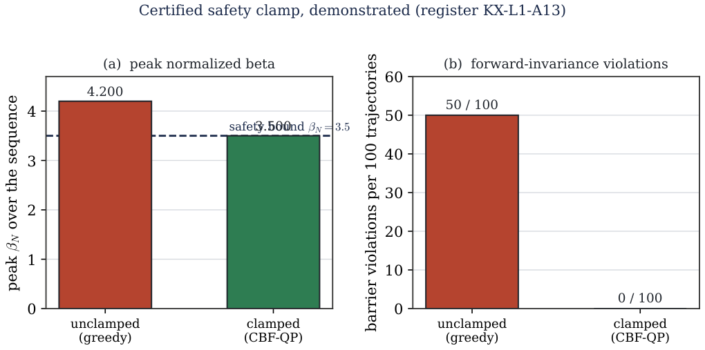

Paper 2.86 · Programme · Phase 2
The Human-Machine Layer for Autonomous Fusion Operation: Natural-Language-Supervised Control, Autonomous Root-Cause Analysis and a Digital Operator Logbook
Headline results Marquee frozen quantities, each an anchor in the Kronos de-risking register, recomputed by an explicit code and stamped before freeze.
Verification scorecard Frozen anchors grouped by domain, carried verbatim from the manuscript. Status reflects the freeze: recomputed, cross-checked, locked.
Power balance & gain
Q Fusion gain 3.076 FROZEN ✓
Configuration & MHD
δ Triangularity -0.30 FROZEN ✓ κ Elongation 2.0 FROZEN ✓
Key figure 
Representative figure from the paper. Full set in the publication and its Zenodo deposit. Gate validators · 1 live card Every de-risking gate this paper rests on — each a live verification card you can open and re-run.
All 1 Level 1 Level 2 Outputs Register
Codes & methods Every quantitative claim is produced by an explicit code, re-run independently against a second library before freeze.
FreeGSNKE
FreeGS
CGYRO
OpenMC
DAGMC
Reproduce this # Kronos toolkit — reproduce the 2.86 frozen anchors
git clone https://github.com/KronosFE/kronos-toolkit
cd kronos-toolkit && pip install -e .
kronos verify --paper 2.86
# anchors stamped in the de-risking register (DOI below); gate-by-gate provenance in the cards above.
© 2026 Kronos Fusion Energy · a family-owned American company · validator layer, frozen 2026 series